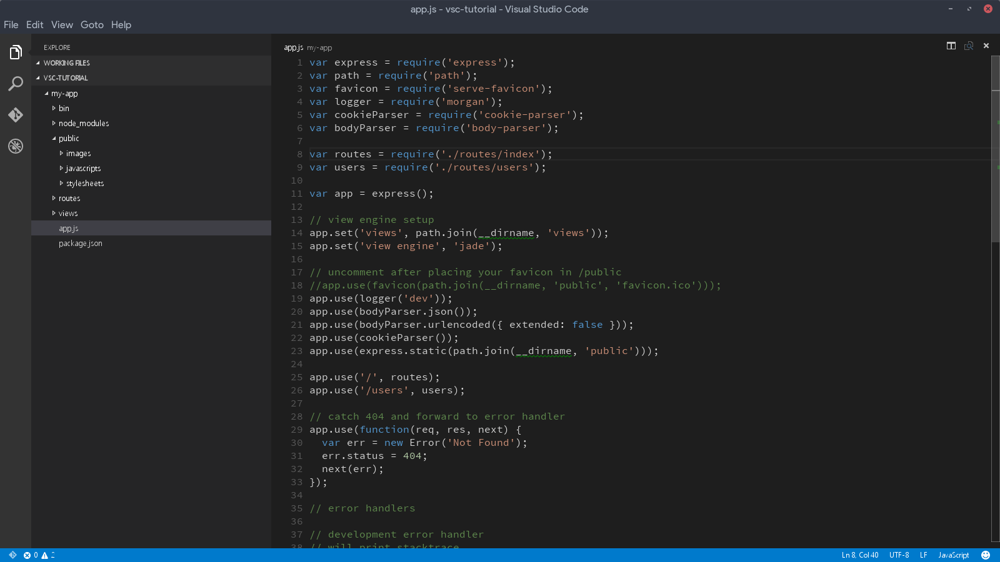

UT 2 Python, instalación y IDE

Python
- Python es un lenguaje de programación interpretado cuya filosofía hace hincapié en una sintaxis muy limpia y un código facilmente legible.
- Ideado por Guido van Rossum, empezó su desarrollo en 1989.
- Es un lenguaje de alto nivel con una gramática sencilla, clara y muy legible.
- Es dinámicamente tipado: Es decir, el tipo de las variables se decide en tiempo de ejecución.
- Es fuertemente tipado: No se puede usar una variable en un contexto fuera de su tipo. Si se quisiera, habría que hacer una conversión de tipos.
- Es un lenguaje multiparadigma: soporta la orientación a objetos, la programación estructurada y la programación funcional.
- Open Source, de código abierto y gratuito.
- Relativamente fácil de aprender.
- Presenta numerosas librerías que lo convierten en un firme candidato para la programación de IA, ciencia de datos, desarrollo web y mucho más.
- Interpretado, aunque el código fuente se compila primero a bytecode que ejecuta la máquina virtual de Python.
- Lenguaje “todo terreno”: sirve tanto para aplicaciones de escritorio, programación en entorno servidor, desarrollo web, automatización, etc.
- Multiplataforma: se pueden desarrollar programas en Mac, Windows, Linux y otros sistemas operativos.
Python y otros lenguajes de programación, índice TIOBE
- El índice de programación TIOBE es un indicador de la popularidad de las lenguas de programación.
- El índice se actualiza una vez al mes. Las calificaciones se basan en el número de ingenieros cualificados en todo el mundo, cursos y proveedores de terceros. Los sitios web populares Google, Amazon, Wikipedia, Bing y más de otros 20 se utilizan para calcular las calificaciones.
- El índice TIOBE no trata de decidir del mejor lenguaje de programación o del lenguaje en el que se han escrito la mayoría de las líneas de código, sino de su popularidad en un momento dado.
- El índice se puede (debe) utilizar para comprobar si nuestras habilidades de programación están actualizadas o para tomar una decisión estratégica sobre qué lenguaje de programación debe ser adoptado cuando se comience a construir un nuevo sistema de software.
La definición del índice TIOBE se puede encontrar aquí.
Popularidad de Python según TIOBE
En el periodo 08/24-08/25, podemos ver el incremento significativo de la popularidad del lenguaje de programación Python.

Índice TIOBE
Con la figura de aquí abajo podemos ver las popularidades sobre un periodo de tiempo más extenso.

Entorno de Desarrollo Integrado
Un IDE (Integrated Development Environment o Entorno de Desarrollo Integrado) es un programa que reúne en una sola aplicación todas las herramientas necesarias para desarrollar software.
üìå Sus componentes principales suelen ser:
- Editor de código: para escribir el programa con resaltado de sintaxis y ayudas.
- Compilador o intérprete: para traducir el código fuente a un lenguaje que el ordenador pueda ejecutar.
- Depurador (debugger): para detectar y corregir errores durante la ejecución.
- Gestión de proyectos: organiza archivos, dependencias y librerías.
- Autocompletado y sugerencias: acelera la escritura de código.
IDE en línea
Un IDE en línea (Entorno de Desarrollo Integrado en la nube) es una plataforma accesible desde un navegador web que permite a los programadores escribir, ejecutar, depurar y colaborar en proyectos de software sin necesidad de instalar herramientas pesadas en el ordenador local.
üîß Ejemplos de IDE en l√≠nea:
- Replit → Muy usado en educación y proyectos colaborativos, soporta muchos lenguajes, permite ejecución inmediata y tiene integración con bases de datos.
- GitHub Codespaces → Entorno de desarrollo basado en Visual Studio Code pero en la nube, directamente desde los repositorios de GitHub.
- Codeanywhere → Ofrece entornos Docker personalizables y colaboración en tiempo real.
- AWS Cloud9 → IDE en línea de Amazon, con integración nativa con todos los servicios de AWS.
- Glitch → Enfocado en aplicaciones web, con despliegue automático al guardar cambios.
Jupyter Notebook y Google Colab
Jupyter Notebook / JupyterLab
Es un entorno interactivo basado en celdas que permite escribir código, texto en Markdown, gráficos, fórmulas matemáticas (LaTeX) y ejecutar el código paso a paso.
Aunque nació como una herramienta de investigación y enseñanza en ciencia de datos, se ha convertido en un estándar de facto en el mundo de Python.
Se puede usar localmente (instalando Jupyter en tu PC) o en la nube (ej. Binder, JupyterHub).
Google Colab
Es básicamente un Jupyter Notebook en la nube, mantenido por Google.
Permite ejecutar código Python directamente en servidores remotos de Google (gratis o bajo suscripción).
Se usa mucho en machine learning, análisis de datos y enseñanza de programación en Python.
IDE locales
A diferencia de los IDE en la nube, estos utilizan los recursos de la máquina local (CPU, RAM, disco duro, tarjeta gráfica, etc.) para ejecutar, compilar, depurar y probar los programas.
üîß Ejemplos de IDE muy usados:
- Visual Studio Code (será el que usaremos).
- Eclipse (muy usado en Java).
- IntelliJ IDEA.
- PyCharm (para Python).
- NetBeans.
Visual Studio Code (VSC) como herramienta principal en el curso.
Durante el curso utilizaremos Visual Studio Code, que no es un IDE en el sentido más “pesado” como Eclipse o IntelliJ, sino un editor de código avanzado que, mediante extensiones, se convierte en un IDE completo.
üéØ ¬øPor qu√© VSC?
- Multiplataforma → Funciona en Windows, Linux y macOS.
- Es gratuito y de código abierto.
- Es fácil de instalar y configurar.
- Se adapta tanto a estudiantes como a programadores avanzados.
- Permite trabajar en múltiples lenguajes.
- Dispone de una comunidad muy importante lo que permite disponer de infinidad de extensiones (jupyter).
Instalación de VSC
- Seguir el siguiente enlace y descargar el instalador.

- Hacer doble clic sobre el archivo, no cambiar nada de todas las opciones seleccionadas y seguir las instrucciones.
- Lanzar VSC. Si la instalación se ha hecho correctamente, debería aparecer una interfaz similar a la de la siguiente imagen. 
Instalación de Python
-
Seguir el siguiente enlace y descargar el instalador.

-
Hacer doble clic sobre el instalador archivo, ticar la opción Add python.exe to PATH y pulsar Install Now.
-
Dejar que la instalación se complete.

-
Por último seleccionar la opción Disable path Lenght limit.
-
Para comprobar que la instalación se ha realizado correctamente, abrir una terminal de VSC y escribir el siguiente comando:
Este comando pide al sistema que le devuelva la versión de python instalada.
De haberse instalado correctamente el resultado será similar al de la siguiente imagen.
Primer programa en Python
Vamos a escribir nuestro primer programa Python que muestre un saludo por pantalla. Para ello creamos un archivo fuente Python llamado, HolaMundo.py en la carpeta donde queramos trabajar, y lo guardamos con este contenido:
Nota: Es probable que al crear el archivo VSC detecte la necesidad de instalar alguna extensión para Python:

Para ejecutar el programa, simplemente pulsaremos el boton de play.

El resultado de la ejecución tendrá el siguiente resultado.
Ya estamos listos para aprender el lenguaje de programación Python.